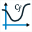
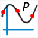

La courbe de fonction n'existe pas en tant qu'objet.
Mais MathGraph32 peut tracer la courbe d'une fonction comme un lieu de points reliés généré par le déplacement d'un point lié.
Votre figure doit être munie d'un repère.
Vous devez d'abord créer une fonction à l'aide de l'icône  ou du menu Calculs - Nouveau calcul dans R - Nouvelle fonction réelle.
ou du menu Calculs - Nouveau calcul dans R - Nouvelle fonction réelle.
Si votre figure comporte un ou plusieurs repères, en bas de la boîte de dialogue est cochée la case Tracer courbe.
Si vous laissez la case Tracer courbe cochée, la courbe de la fonction sera automatiquement tracée (sur R).
Si vous désirez tracer la courbe de cette fonction seulement sur un intervalle (ou ne pas tracer a courbe) décochez la case Tracer courbe.
Si vous n'avez pas choisi de tracer la courbe de la fonction dans la boîte de dialogue de création de fonction, vous pouvez tracer la courbe à posteriori en utilisant l'icône

.Une boîte de dialogue s'ouvre.
Sélectionnez la fonction et le repère dans lequel tracer la courbe.
Choisissez ensuite sur quel type d'intervalle doit être tracée la courbe.
Pour créer cette courbe MathGraph32 crée un point lié à l'axe des abscisses, une demi-droite ou un segment suivant l'intervalle d'intervalle choisi.
Il crée ensuite la mesure de l'abscisse de ce point lié, un calcul égal à l'image de cette abscisse par la fonction et un point de coordonnées (abscisse, image).
La courbe est ensuite le lieu de ce dernier point généré par les positions du point lié.
Vous pouvez changer le nombre de points utilisés pour tracer le lieu de points (la courbe).
Vous pouvez demander :
Trois outils supplémentaires permettent aussi de tracer des courbes de fonctions.
L'outil  permet de tracer une courbe de fonction avec un ou deux crochets pour montrer qu'une fonction n'est pas définie en un point.
permet de tracer une courbe de fonction avec un ou deux crochets pour montrer qu'une fonction n'est pas définie en un point.
L'outil  permet de créer une courbe de fonction étant donné n points et les coefficients directeurs des tangentes en ces points (n variant de 2 à 10).
permet de créer une courbe de fonction étant donné n points et les coefficients directeurs des tangentes en ces points (n variant de 2 à 10).
L'outil

permet d'obtenir la courbe d'une fonction polynôme de degré inférieur ou égal à n passant par n points (n valant de 2 à 8).A noter : Il est possible de lier un point à un lieu de points et donc en particulier à une courbe de fonction.